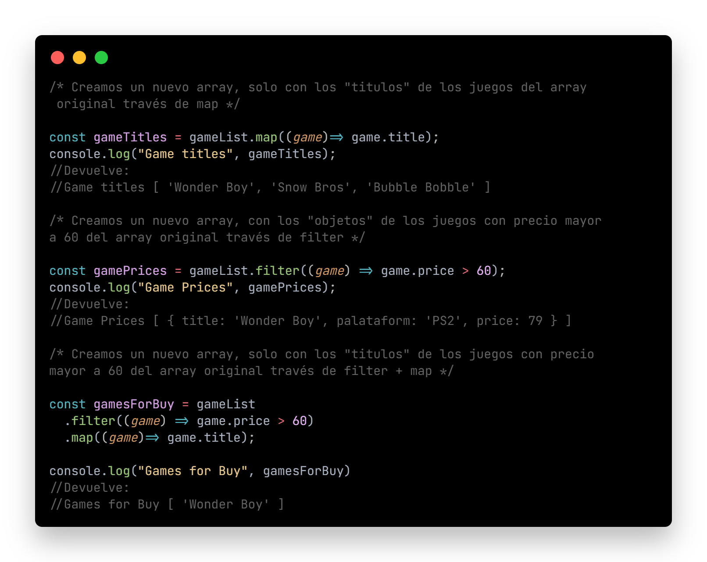
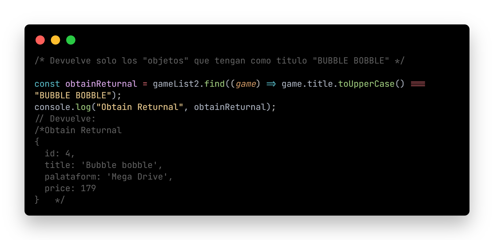
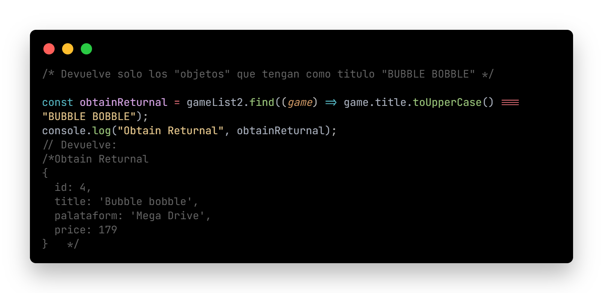
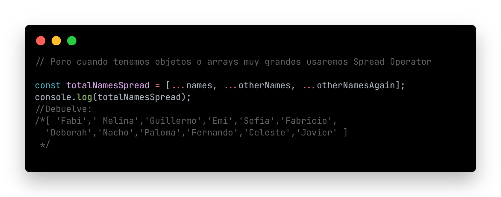
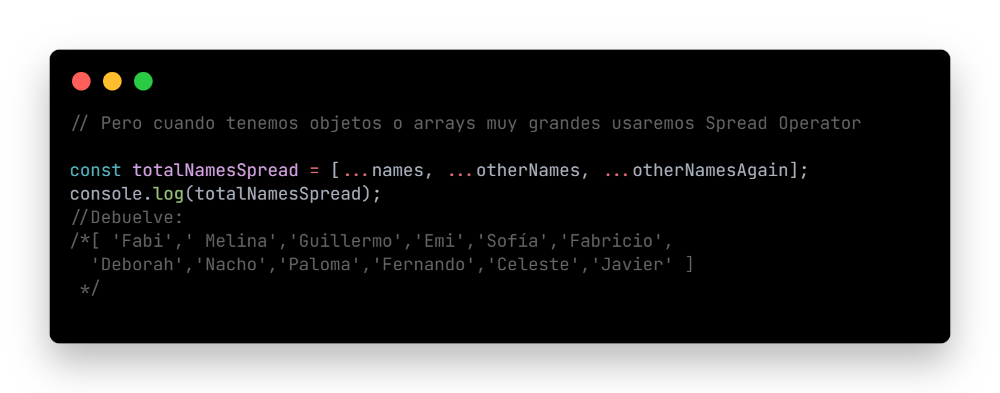

Funciones y Métodos 2 JS
Clase 9 - 29/07 - Link clase 9 - YouTube
Filter, find, destrocturing an spread operator
Método Filter
-
Filter nos permite iterar por cada elemento de un determinado array y nos devolerá otro array con la información que se corresponda con la condición que le indiquemos en el callback de la función.
* Ver código funcional en archivo ejercicio-funciones2.js


-
Filter en Acción
* Ver código funcional en archivo ejercicio-funciones2.js


Método Map y Filter
-
Un problema recurrente cuando solicitamos o nos llega la información desde una API y el caudal de información grande, la performance puede verse afectada por el alto costo de métodos en conjunto (si, se puede) para poder crear un algoritmo de mejor rendimiento.
* Ver código funcional en archivo ejercicio-funciones2.js

Método Find
-
Find similar a lo que hace Filter y Map, recorre un array dado y devuelve la primera coincidencia respecto a una condición dada. A partir de ese momento deja de recorrer el array.
* Ver código funcional en archivo ejercicio-funciones2.js
 

Destructuring
-
Destructuring (Desestructuración) es una expresión de JavaScript que nos permite extraer datos de matrices, objetos y mapas y establecerlos en variables nuevas y distintas. La desestructuración nos permite extraer múltiples propiedades, o elementos, de una matriz a la vez.
* Ver código funcional en archivo ejercicio-funciones2.js


Spread Operator
-
Spread Operator (Operador de propagación) es una nueva adición al conjunto de operadores en JavaScript ECMAScript 6. Toma un iterable (por ejemplo, una matriz) y lo expande en elementos individuales.
Spread Operator se usa comúnmente para hacer copias superficiales de objetos JS. El uso de este operador hace que el código sea conciso y mejora su legibilidad.
* Ver código funcional en archivo ejercicio-funciones2.js
 
